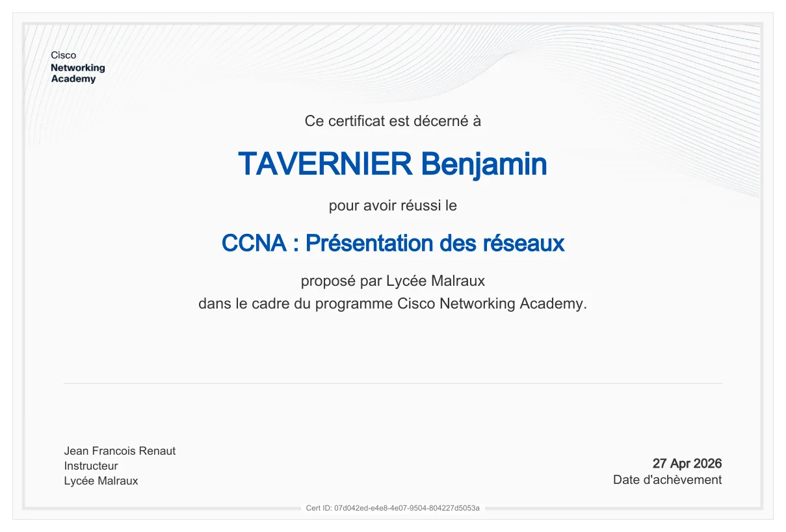
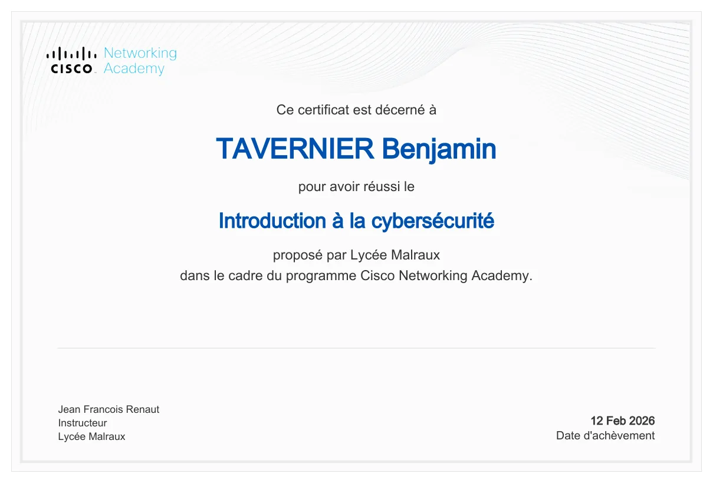
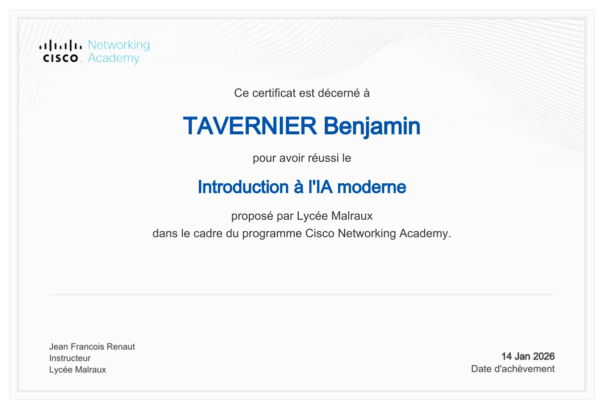
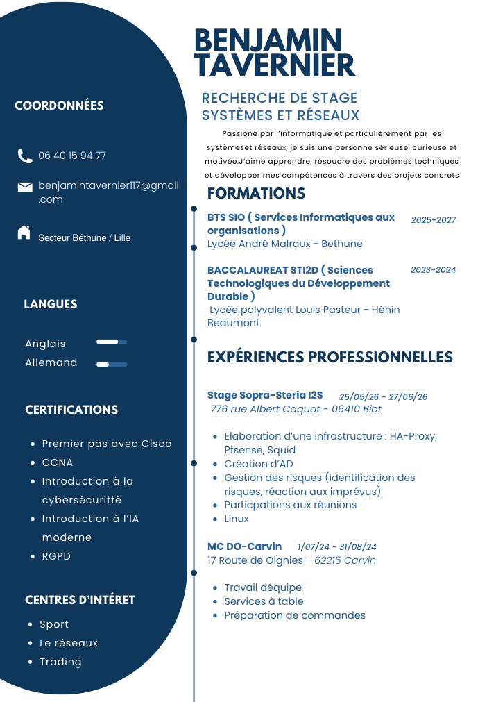

01
Réseaux & infrastructure
Comprendre, configurer et diagnostiquer les communications entre équipements.
Tavernier Benjamin // Étudiant en informatique
Étudiant en BTS SIO option SISR au lycée André Malraux de Béthune. Je m’intéresse à l’administration des infrastructures, à la disponibilité des services et à la sécurité des réseaux.
À PROPOS
Je suis Tavernier Benjamin, actuellement en BTS SIO option SISR au lycée André Malraux. J’aime comprendre comment les systèmes communiquent, comment ils se maintiennent et comment les rendre plus sûrs.
À travers ce portfolio, je présente mon parcours, mes compétences et les preuves concrètes de mes réalisations pendant ma formation.
Devenir administrateur systèmes et réseaux et participer à la gestion, à la maintenance et à la sécurisation des infrastructures informatiques. Je souhaite développer mes compétences en administration système, en réseaux et en cybersécurité.
COMPÉTENCES
Mes domaines de pratique : infrastructures réseau, serveurs, sécurité et support. Des réalisations et comptes rendus viennent illustrer ces compétences.
Comprendre, configurer et diagnostiquer les communications entre équipements.
Administrer des environnements et apprendre à assurer leur disponibilité.
Appliquer les bonnes pratiques, surveiller les vulnérabilités et réduire les risques.
Diagnostiquer les incidents, assurer la maintenance des équipements informatiques et veiller à la disponibilité des services réseau et système.
PROJETS
Projets de stage et ateliers de formation : les documents associés permettent de distinguer mes comptes rendus personnels des supports de TP.
Projet travaillé pendant mon stage, dont le périmètre a évolué avec les demandes de mon tuteur. L’infrastructure documentée associe un cluster pfSense en haute disponibilité, des zones clients et serveurs, Active Directory, Squid et HAProxy devant deux serveurs Apache.
Travaux pratiques autour d’un domaine Active Directory et d’un poste client Windows. Analyse des droits de jonction au domaine, du quota des comptes ordinateurs et du comportement de l’ouverture de session lorsque les contrôleurs de domaine sont indisponibles.
Atelier de déploiement d’un service de fichiers interne : comptes Linux sans connexion interactive, répertoires personnels, permissions et accès CIFS/Samba depuis un poste client. Le cahier des charges prévoit également l’ajout d’utilisateurs et l’automatisation du montage.
Atelier de séparation d’un réseau local et d’une DMZ. Mise en œuvre documentée de pfSense, de règles de filtrage et d’un reverse proxy HAProxy pour exposer un service Web sans donner un accès direct au réseau interne.
Vérification de l’authenticité d’un téléchargement de Notepad++ à partir de son site officiel et comparaison des sommes de contrôle. Distinction entre intégrité des fichiers et confidentialité des échanges.
Étude en environnement de laboratoire d’un empoisonnement de cache ARP et de l’interception d’informations transmises en HTTP. Le travail permet de comprendre l’intérêt de TLS/HTTPS pour protéger les données en transit.
Travaux pratiques sur une architecture à deux serveurs : hébergement Web sur Windows Server 2022 avec IIS/PHP et base de données MySQL sur Linux, puis vérification d’accès à une application depuis un poste client.
TP consacré à l’effet d’une charge HTTP et de paquets TCP SYN sur la disponibilité d’un serveur Apache, uniquement dans un laboratoire de machines virtuelles isolées. Mesures de charge, de latence et d’erreurs prévues par le sujet.
Travaux et notions rencontrés dans mes dossiers de cours
EN DEHORS DES COURS
Un projet développé sur mon temps personnel pour expérimenter la programmation, le traitement de données et la conception d’une application web.
J’ai conçu un outil web expérimental d’analyse technique du marché de l’or. Il permet d’importer des données de prix au format CSV, d’afficher un graphique annoté, de repérer des structures de marché (BOS/CHoCH), des zones de liquidité, des order blocks et des FVG, et d’organiser un journal de trading et des paramètres de risque.
Prototype personnel d’apprentissage, sans promesse de performance financière. L’analyse de captures via une API externe n’est pas nécessaire à la démonstration CSV.
Présentation d’un projet personnel de suivi et d’analyse : l’atelier met en avant une progression construite à partir d’un capital initial de 100 €.
ARCHITECTURE DU STAGE
Une architecture réseau que j’ai fait évoluer avec mon tuteur : séparation des zones, haute disponibilité des pare-feu et répartition de charge des services Web.
Le schéma reprend les composants de l’infrastructure documentée pendant mon stage. Les adresses IP du laboratoire sont volontairement omises dans cette présentation publique.
Schéma reconstitué à partir de mon document d’infrastructure de stage. Les détails techniques sensibles ne sont pas publiés.
Deux pare-feu et des adresses virtuelles pour prévoir la continuité d’accès aux deux réseaux.
Proxy Web côté clients ; identification et services de domaine côté serveurs.
Point d’entrée HTTP et répartition Round-Robin vers deux serveurs Web backend.
RÉFÉRENTIEL BTS SIO
Les domaines du référentiel sont illustrés par mes travaux de stage, mes dossiers techniques et ma démarche de veille.
Inventaire, ressources numériques, habilitations, continuité de service et sauvegardes.
Collecter, suivre et traiter les demandes utilisateurs, réseau et système.
Site web, référencement, visibilité et valorisation des services numériques.
Objectifs, planification, coordination, suivi et bilan des activités.
Tests, déploiement, documentation et accompagnement des utilisateurs.
Veille, environnement d'apprentissage, identité et projet professionnels.
PARCOURS
Lycée André Malraux · Béthune
Administration de serveurs, réseaux, virtualisation et cybersécurité ; ateliers de professionnalisation et veille.Sopra Steria I2S · mai – juin 2026
Conception et documentation d’une architecture haute disponibilité avec pfSense, CARP, Active Directory, Squid, HAProxy et Apache.Sciences et technologies de l’industrie et du développement durable
Première étape de mon parcours technique, avant la spécialisation en systèmes et réseaux.CERTIFICATIONS & DIPLÔMES
Certificats officiels Cisco consultables au format PDF, attestations CNIL RGPD et badges de réussite.

Cours Cisco Networking Academy · fondamentaux des réseaux et de leur fonctionnement.

Cours Cisco Networking Academy · introduction aux menaces et aux principes de protection des systèmes.

Cours Cisco Networking Academy · découverte des principes et des usages de l’intelligence artificielle.
Module 1 · CNIL · Évaluation : 83 %
Module 2 · CNIL · Évaluation : 90 %
Module 3 · CNIL · Évaluation : 87 %
Module 4 · CNIL · Évaluation : 91 %
VEILLE TECHNOLOGIQUE
Une veille ciblée sur les vulnérabilités Windows Server et Linux, à partir de bulletins de sécurité reconnus.
Je suis les vulnérabilités touchant Windows Server et Linux : systèmes affectés, impact, correctifs et mesures de réduction du risque.
Suivi des vulnérabilités publiées et des recommandations de correction pour les systèmes et serveurs informatiques.
Consulter la sourceBulletins et mises à jour de sécurité Microsoft : suivi des risques pouvant affecter Windows Server.
Consulter la sourceAvis de sécurité Linux et analyse de l’impact des mises à jour sur les services hébergés.
Consulter la sourceMON CV
Mon CV présente ma formation en BTS SIO SISR, mes compétences et mon expérience de stage chez Sopra Steria I2S, ainsi que mes projets en administration systèmes et réseaux.
Voir et télécharger mon CVVersion publique du CV : adresse postale détaillée masquée.

CONTACT
Vous pouvez découvrir mes réalisations et les connaissances développées au cours de ma formation.